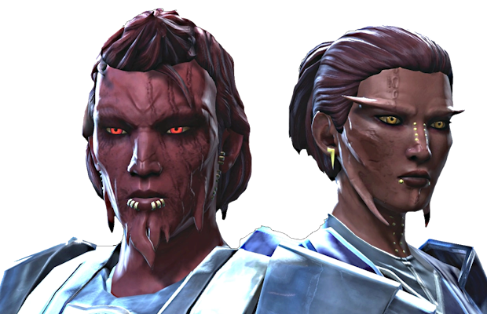
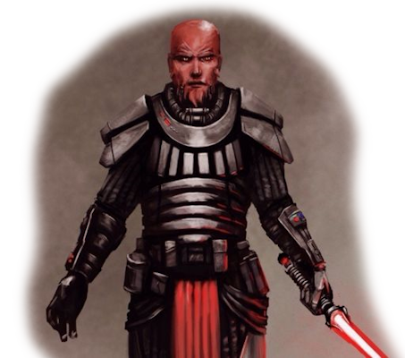
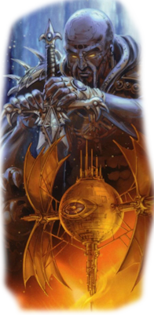

«Термин «ситхи» фактически относится к расе гуманоидов с красной кожей, которые были родом с Коррибана».
*Вестара Каи*
Ситхи, также известные как красные ситхи или чистокровные ситхи — разумная раса краснокожих гуманоидов, происходишвая с планеты Коррибан. К отличительным особенностям ситхов относились их костные выступы и лицевые отростки, а также исключительная чувствительность к Силе и особенно сильная связь с Тёмной стороной. Цивилизация ситхов построила свою первую империю задолго до основания Галактической Республики, а позже была покорена тёмными джедаями, которые повели ситхов к Золотому веку.
Несмотря на господство варварства и борьбы в их обществе, цивилизация ситхов достигла пика своего развития в Золотой век, в это время их раса была рассеяна почти по всей галактике. Традиция использования Темной стороны Силы взяла имя расы, и, несмотря на многочисленные проявления в течение многих лет, их основу составляли обычаи, наука и магия, практикуемые древней расой ситхов.
Имена Ситхов Особенности СитховСитхи были гордой и сильной расой гуманоидов, возникшей на Коррибане, планете в системе Хорусет, расположенной в изолированном регионе Внешнего Кольца, позже названном Непроницаемая кальдера. Большинство ситхов были чувствительны к Силе. Обилие чувствительных к Силе было связано с их симбиотической связью с Темной стороной, которая не только подпитывала их, как и немногих других существ населявших планету, но и использовала.
У взрослого ситха кожа была характерного темно-красного оттенка, тогда как рождались они с кожей более светлых тонов. Однако некоторые ситхи и в старости имели светлый оттенок кожи. Ситхи были обладателями свирепой и хищной внешности, одной из их характерных черт были костные выступы, выступающие из-под кожи в различных местах, например из локтей. На их лицах была пара кожных отростков, свисавших с их высоких скул. Кроме того, ситхи обладали черепными рожками, острыми зубами, обезьяноподобным ртом и маленьким носом, а также пылающими желтыми глазами. У многих ситхов были длинные костистые подбородки. Они обладали тремя когтистыми пальцами на каждой руке и ноге. В основном ситхи были левшами, в результате чего их оружие, такое как ланварок, изготавливали для использования левой рукой.
Лицевые отростки они использовали для выражения своих эмоций посредством подергивания и других различных движений. Например, небольшое завивание отростков означало, что ситх пришел к новому мнению, в то время как взмах правым отростком выражал заботу о ком-либо. Кроме того, дрожание отростков было признаком гнева, а в сочетании с приподнятыми бровями показывало вопросительную эмоцию. У ситхов, в особенности у касты массасси, были чрезвычайно обостренные чувства по сравнению с людьми. Так, например, несмотря на маленькие уши, у них был чувствительный слух.
Несмотря на почти постоянные войны, цивилизация ситхов имела сложную структуру. Они не рассматривали свои действия как жестокие и варварские, а считали их просто основными аспектами существования. Известно, что они практиковали жертвоприношения во имя богов. Постоянные войны привели к сокращению населения на Коррибане и развитию у них ксенофобских взглядов.
Их культура включала в себя: ситхский язык, употребление кровавого супа, строгое разделение общества на касты, жертвоприношение богам разумных существ и использование древних знаний алхимии и магии. Для ситхов война была таким же естественным понятием, как для многих мир и покой. Их общественный строй был очень суров, в то время как многие стремились стать Лордами ситхов, только один — король Адас — стал настоящим правителем. Другая черта культуры ситхов — создание голокронов для хранения знаний — возникла после их первой встречи с Бесконечной империей раката.
Еще одним аспектом, появившимся на Коррибане, было возникновение Теневой руки. Носивший это звание был чем то вроде падавана у джедаев. Одна из самых старых и наиболее великих сил ситхов была их магия. Эта сила помогала им совершать поистине великие вещи, например превращать звезды в сверхновые.
Общество ситхов было строго иерархическим, с жесткой кастовой системой и многослойной ранговой структурой, позволяющей сохранять подчиненных на их местах. Несмотря на общие черты: красную кожу, кожные отростки и костные выступы, все касты настолько отличались друг от друга, так, что многие считали их подвидами расы ситхов. После скрещивания темных джедаев с ситхами «оригинальную» расу стали называть красными ситхами. Их кастовая система включала послушную и непритязательную касту рабов, умную и изобретательную касту зугуруков-инженеров, касту магов-киссай, и касту воинов-массасси.
Каста гроттху: ситхи-рабы были послушным и исполнительным подвидом расы ситхов, занимавшим низшее место в иерархии. У чистокровных рабов было по три пальца на руках, в отличие от других каст, а после скрещивания с тёмными джедаями стало по четыре пальца на каждой руке. Их часто использовали в качестве жертвоприношений богам. Лорды ситхов использовали рабский труд, а после смерти, их рабов хоронили вместе с ними в гробницах на Коррибане.
Каста зугуруков: ситхи-инженеры строили и обслуживали технологии ситхов, включая дроидов и космические корабли.
Каста массасси: массасси были кастой воинов. Представители этой касты были выше и сильнее представителей других каст ситхов, что в совокупности с врожденной яростью делало их эффективными солдатами вооруженных сил ситхов. Массасси не были интеллектуалами, но могли обучаться выполнению достаточно сложных боевых операций, использованию оборудования, кораблей и вооружения, что делало их очень полезными для Империи ситхов. Их лояльность нужно было заслужить, но если это удавалось, они становились беспрекословно верными Темному лорду ситхов. Также они служили и отдельным владыкам ситхов, но эта лояльность была вторична. У массасси был свой сложный язык, который, скорее всего, произошел от ситхского.
Каста киссай: представителями данной касты были маги ситхов. Они изучали Темную сторону Силы и использовали древнюю магию и алхимию ситхов. Киссай были столь же безжалостны, как и массасси, но обладали более развитым интеллектом и наблюдательностью, что компенсировали отсутствие таких физических данных как у массасси.
Искусство алхимии позволяло ситхам создавать неживые объекты и живых существ с помощью Темной стороны Силы. Для увеличения своих умений в использовании Силы, ситхи создавали талисманы, в которых фокусировали и накапливали энергию Темной стороны. Такие артефакты часто использовались для проведения сложных ритуалов, чтобы временно увеличить мощь ситха. Форма артефактов варьировалась от кристаллов до амулетов. После столкновения с джедаями, которые пытались использовать талисманы для увеличения способностей Светлой стороны, ситхи стали создавать поддельные талисманы, обращающие их носителя на Темную сторону Силы. После уничтожения ситхов такие талисманы были объявлены вне закона. В дополнение к этим артефактам ситхи создавали исцеляющие талисманы. Они применялись чистокровными ситхами во время восстания во главе с Нага Садоу для обеспечения преимущества перед другими фракциями. Такие талисманы ускоряли естественный процесс регенерации за счет связи пользователя с Силой. Также существовали защитные талисманы, которые были способны поглощать любые формы энергетического нападения и использовали эту энергию для подпитки. После разрушения Империи ситхов, джедаи обнаружили, что артефакты очень сложно уничтожить. Далеко не все поддавались физическому воздействию, некоторые могли быть уничтожены только мастерами-джедаями, другие только с помощью Темной стороны Силы. Это привело к тому, что талисманы спрятали в различных опасных и труднодоступных местах, чтобы препятствовать их попаданию в чьи-либо руки.
Талисманы, увеличивающие способности Силы, были не единственными артефактами, которые создавали ситхи. В давние времена они узнали, что использование Силы создает определенное волнение, которое могут почувствовать другие. Это привело к созданию масок Силы, способных скрыть использование Силы от других. Кроме того, они создавали различные токсины, такие как яд ситхов, которые ослабляли их цели для влияния Темной стороны. Наряду с обычными артефактами существовали и уникальные, созданные могущественными Лордами ситхов. К таким артефактам относятся: Рукавица Кресша-младшего, Талисман Муура, Ковчег Дрейпы, Око Хорака-мула, Меч и шлем Иелдиса, Шлем Датки Грауша, Скипетр Марки Рагноса, а также Сердце Грауша.
В древние времена ситхи создавали книги и рукописи для хранения своих знаний. Их свитки содержали различную информацию, начиная от обучения методам обработки оружия с помощью алхимии и заканчивая магией ситхов. Это было до того, как ситхи научились создавать голокроны. Изначально ситхи не владели данной технологией, но раката обучили их в знак своей «доброй воли». После этого ситхи стали хранить свои знания и методы обучения в голокронах. Эти устройства наполнялись Силой, хранили и могли воссоздавать образ своего создателя, который взаимодействовал с будущими пользователями. Поскольку создатели голокронов нередко были сильны в определенной области, только эти знания и хранились в таких устройствах. Это привело к потере многих знаний, так как они или уничтожались, или вовсе не записывались. Те голокроны, которые не попали в руки пользователей Темной стороны и не были уничтожены, оставались в гробницах своих создателей. Даже спустя тысячелетия они обладали тлетворным влиянием на тех, кто получил к ним доступ. Несмотря на применение голокронов, ситхи не отказались и от рукописей для хранения своих знаний. Существовали такие реликвии, как «Послание Марки Рагноса» и «Кодекс Карнесса Муура».
Алхимия применялась ими для создания различного оружия, такого как мечи ситхов. Они были одними из первых видов оружия, сделанными ситхами, и показали себя достаточно эффективно. Такие мечи были достаточно прочными, чтобы противостоять даже ударам световых мечей. Также они обладали таким уникальным свойством, которое позволяло им сохраняться в отличном состоянии на протяжении тысяч лет. Древние лорды ситхов с Зиоста умели создавать сплавы кортозиса и использовали их в своих виброклинках. ситхи создавали такое примитивное оружие дальнего действия, как ланварок. Изначально он использовался для охоты, но его можно применять и для отвлечения внимания противника. Но они создавали не только оружие. ситхи применяли так называемую темную броню, которая обеспечивала владельца дополнительной защитой и создавалась по индивидуальным требованиям пользователей.
С помощью алхимии ситхи создавали биологическое оружие, которое использовали в генной инженерии для создания различных монстров. Одними из таких животных были тук'ата, которые охраняли могилы ситхов. Фактически, древняя Империя ситхов создала хризолитовых монстров, которых многие владыки ситхов использовали в качестве домашних животных и защитников. Они даже создали животное силут, которое применяли, чтобы сломить вражескую обороноспособность при ведения осады.
Ситхи рассматривали строительство зданий, как создание произведений искусства. Они считали, что такие здания будут продолжением личности их создателей. Их внутренняя структура создавалась так, чтобы запутать врагов и предоставить хозяевам тактическое преимущество. Такие методы использовались и при создании фокусирующих камер, предназначенных для усиления мощи лордов ситхов. По такому принципу они могли создавать и корабли, такие как Сфера медитации ситхов, которая усиливала чувствительность и уровень использования Силы. Более грандиозным свидетельством их технологических способностей было создание во времена Великой гиперпространственной войны супероружия «Тёмный жнец», которое питалось энергией Силы.
К примерам типичных ситхских имен можно отнести: Адас, Сек'нос Рат, Марка Рагнос, Лудо Кресш, Нага Садоу, Вишейт, Экзал Кресш, Скордж, Найрисс, Минакс, Аркус, Ваурон, Кровос, Сайнар, Серевин, Соверус, Тормен
Цивилизация ситхов развивалась на Коррибане — там они вели варварский образ жизни и научились использовать Темную сторону Силы. ситхи обладали естественной симбиотической связью с Темной стороной. Они питали её и использовали — развивали и совершенствовали методы управления Темной стороной с помощью казавшегося невероятным колдовства. Несмотря на то, что у них была великая держава, ситхи жили разрозненными племенами во главе с одним или несколькими магами ситхов, которые были ответственны за безопасность и защиту своих подданных. Племена постоянно находились в состоянии войны, но для них это было нормой и они не знали, как жить по-другому. Основание цивилизации ситхов датируется 100000 ДБЯ, свидетельством чему служит тёмный голокрон, содержащий знания ситхов за этот промежуток времени.
Среди некоторых историков было мнение, что несколько древних обычаев ситхов, таких как потребление кровавого супа, происходит из-за взаимодействия культур ситхов и анзати. Джедай Вольф Каркко однажды отметил, что анзати (его раса) «помнят самых первых ситхов». Однако кроме его слов нет других подтверждений данной теории.
В течение этого времени ситхи записывали информацию в свитки, книги и таблицы. Они содержали темные знания, которые описывали способности Темной стороны Силы, алхимию, создание оружия и артефактов, а также курс на господство, и уничтожение остальных рас. Эти записи были наполнены безумием писавших их ситхов и сводили с ума неподготовленных искателей этих знаний. Известно, что ситхи в эту эпоху обладали доскональным знанием источников своей мощи, в особенности гнева и мести, которые вели на Темную сторону Силы. Они продемонстрировали это приблизительно в 30000 ДБЯ, отразив вторжение килликов.
Приблизительно в 36453 ДБЯ гигантские корабли пирамидальной формы — То Йоры — собрали наиболее чувствительных к Силе существ со всей галактики и доставили их на Тайтон. Впоследствии эти существа стали первыми дже'дайи, и среди них были представители расы ситхов. После десяти тысячелетий изучения баланса между так называемыми Светлой и Темной сторонами Силы, их потомки все еще находились на Тайтоне, но уже в статусе мастеров, странников и дипломатов дже’дайи. Незадолго до начала Войн Силы, случай заставил Светлую и Темную стороны Силы поляризоваться в умах дже’дайи, что в конечном итоге и привело к созданию Ордена джедаев.
Гражданская война между ситхами на Коррибане продолжалась многие тысячелетия, но, в конце концов, вся планета объединилась под властью одного ситха — Адаса. Он смог возвыситься благодаря необычному цвету кожи (цвет древесного угля), к тому же он демонстрировал высокое умение сражаться и незаурядный интеллект. У Адаса был чрезвычайный талант к магии ситхов и алхимии, с помощью которой он создал себе мощный боевой топор. Все эти качества позволили ему объединить Коррибан. Это случилось примерно в 28000 ДБЯ, после кровопролитной войны. Адас стал для своих подданных не только королем, но и богом, и в итоге получил титул ситх'ари — идеальное существо. В конечном счете он стал первым лордом ситхов, а его люди верили, что он бессмертен и его правление будет вечным.
Адас правил уже 300 лет, когда на Коррибан прибыли захватчики Бесконечной империи раката, использующие Темную сторону Силы. Раката скрыли свои истинные намерения и попытались усыпить бдительность Адаса, передавая ситхам новые технологии, такие как голокроны. В итоге они попытались захватить ситхов, и ситх’ари поднялся во главе своего народа, чтобы отразить угрозу захватчиков. Известно, что во время войны раката взяли в плен Распира, придворного колдуна короля Адаса, и заключили в ментальную тюрьму. В конечном итоге могучая Бесконечная империя, несмотря на свою передовую технологию, проиграла ситхам. ситхи получили технологии для путешествий в гиперпрострастве и смогли захватить соседние планеты, в том числе и Зиост. Но ценой победы ситхов над раката стала гибель Адаса.
Со смертью Адаса ситхи еще раз погрузились в состояние войны, в которой правители враждующих сторон высокомерно называли себя ситх’ари. Со временем титул лорда ситхов, как он был переведен, стал достаточно распространенным. В итоге, бесконечные войны разорили Коррибан, и ситхи перенесли свою столицу на Зиост. Там они приступили к восстановлению цивилизации под наблюдением своих магов из касты киссай. После восстановления, ситхи приступили к расширению своей Империи, присоединяя к ней соседние планеты, такие как Джагуада и более отдаленные Малакор V и Арбра.
Но раката даровали ситхам не только новую технологию, но и новую концепцию Темной стороны Силы, которая противоречила обычной жизни ситхов: постоянно враждующих, с жертвоприношениями разумных существ богам и магией. В итоге некоторые маги посчитали смерть своего ситх’ари (Адаса) как знак отказаться от старой концепции жизни ситхов. Их объявили еретиками и изгнали, но, используя Силу и технологию гипердрайва раката, они нашли себе другую планету — Тунд, и сформировали там общество чистокровных колдунов-ситхов, основанное на их новых верованиях. Они жили, как они считали, в гармоничном обществе и практиковали магию и науку посредством Силы. Как и раката, они считали, что все разумные существа чувствительны к Силе, а также утверждали, что вездесущность Силы (они называли её «Единство») сама по себе доказывает ошибочность её разделения на какие-либо противоположности. Именно в это время начиналась летопись истории ситхов.
В конечном счете, ситхи в большей степени покинули Коррибан, который стал кладбищем для лордов ситхов, а жить на нем остались лишь религиозные культисты. За тысячи лет кровавых войн Империя ситхов заполнила долины Коррибана могилами своих лордов, делая их с каждым годом все более внушительными. Примерами таких долин могут служить Долина Голг и Долина тёмных лордов.
Ситхи продолжали расширять свою Империю, захватив Крейяcc II в 14000 ДБЯ. Они построили там храм-библиотеку, в которой ситхи-колдуны медитировали и проводили эксперименты, развивая новые способы использования Темной стороны.
За более чем 7000 ДБЯ ситх-завоеватель, известный как Датка Грауш, со своими силами (армией зомби) одержал победу в очередной гражданской войне и в итоге захватил практически весь Коррибан. Его правление продлилось в течение 50 лет и сопровождалось жестокостью и террором, чрезмерными даже для ситхов. В конечном счете, Датка Грауш был убит и погребен в Долине Голг. На момент смерти самопровозглашенный лорд ситхов и король управлял 2/3 Коррибана.
В это же время, в пространстве Республики наиболее амбициозные джедаи Ордена открыли для себя Темную сторону Силы. По прошествии трех лет они восстали против всего Ордена джедаев, между ними началась война. Эта война продлилась сотню лет и закончилась после битвы при Корбосе, в которой более многочисленные джедаи сокрушили своих темных собратьев. Оставшихся в живых темных джедаев посадили на корабль без оружия и навигационных устройств и выслали в ранее неизведанную область Внешнего Кольца, далеко за пределы Республики. Все упоминания о них были стерты. Их беззащитное судно совершило длительное путешествие через гиперпространство, ориентируясь на Темную сторону Силы, и, наконец, добралось до Коррибана.
Приземлившись на Коррибане, темные джедаи были удивлены, обнаружив, что ситхи были чувствительны к Силе. Как и во времена зарождения их цивилизации, ситхи этого времени жили племенами, во главе которых стояли колдуны. Примитивные, религиозные, суеверные и едва цивилизованные ситхи приветствовали своих «гостей» с мечами в руках и попытались испугать темных джедаев грубыми, но в то же время впечатляющими иллюзиями, используя свою магию ситхов. Падшие были удивлены темным знаниям, показанным примитивной расой, и проявили к ним особый интерес. Чтобы получить эти знания, темные джедаи решили поработить ситхов. ситхи стремились защитить свои знания от посторонних, но темные джедаи, благодаря своим навыкам владения Силой, световым мечам и превосходящим технологиям, смогли украсть знания ситхов. Затем они использовали эти знания против враждебной расы. Но, несмотря на поражение, ситхи продемонстрировали отвагу и не желали подчиняться темным джедаям. Тогда джен’джедаи, как их называли на языке ситхов, воспользовались помощью Теневой руки правителя ситхов. С его помощью они убили короля ситхов. ситхи не ожидали такого развития событий, которое привело к смерти их ситх’ари, и с готовностью приняли темных джедаев в качестве своих хозяев, и наградили их голокроном короля Адаса. Темные джедаи объявили себя богами и королями ситхов. Аджанта Полл, лично убивший десятки джедаев на Корбосе, стал первым джен’ари или Тёмным лордом ситхов.
Ситхи стали поклонятся своим новым хозяевам, посвятив свои жизни служению им. Лорды ситхов, получив новые знания и отточив старые, расширили свое влияние за пределы Коррибана. В итоге они захватили все системы предыдущей Империи ситхов. Зиост был вновь назначен столицей, откуда правил Темный лорд. Там же построили крепости, из которых управляли новоиспеченные лорды ситхов. Они создавали новые корабли и оружие, с помощью алхимии выводили новых существ. Темные джедаи даже внесли вклад в архитектуру ситхов. Новые лорды чувствовали, что культура ситхов хорошо подходит их философии, и под властью Темного лорда строго стратифицированная кастовая система, основанная на подвидах ситхов, осталась без изменения. Особый интерес вызвали массасси, которых владыки ситхов использовали в качестве пехотинцев для расширения своей новой Империи.
Лорды ситхов, использующие алхимию для создания новых монстров, применили свои знания на ситхах, чтобы произвести совместное с ними потомство. Так они смешивали кровь джедаев и ситхов на протяжении двух тысячелетий, искоренив при этом такие качества как суеверие, лояльность и сочувствие, усилив им амбициозность, хитрость и грубое использование Силы, которые поощрялось в течение поколений. Вскоре правящая каста Империи ситхов — киссай — была почти полностью составлена из безжалостных, честолюбивых и сильных общих потомков колдунов-ситхов и темных джедаев.
Со временем Империя ситхов во главе с Темным лордом и Советом лордов ситхов расширила свою территорию на целый сектор галактики, хотя в значительной степени их владения находились в Непроницаемой кальдере. Во время расширения ситхи контактировали со многими планетами, в результате они оставили свой след в культурах различных рас — майков, арканианцев и крусканцев. Они даже бывали на Тунде, где потомки ситхов и людей стали жить рядом с чистокровными ситхами-колдунами, покинувшими Империю тысячелетиями раньше. К концу расширения Империи в неё входили сотни миров, включая Дромунд-Каас, Ашас-Ри, Корриз, Ч'ходос и даже отдаленный Малакор V. Каждый из 10 членов Совета лично контролировал дюжину миров. Несмотря на такое множество владений, для ситхов только 5 планет были священными: Зиост, Хар-Дельба, Рельг, Крейяcc II и Коррибан.
Ситхское общество продолжало развиваться, открывая новые способы управления Темной стороной Силы, под началом своей новой Империи, которой управляли милитаризм и уважение к усопшим. ситхи находились в состоянии непрерывных конфликтов из-за лордов ситхов, создававших свои армии и сражавшихся против своих конкурентов ради получения титула Темного лорда. Несмотря на скрещивание джедаев и ситхов кастовая система продолжала существовать. Рабы погибали, упорно трудясь над постройкой могил для своих лордов, также миллионы их гибли в ходе бесчисленных конфликтов в Империи. Лорды ситхов были заняты враждой друг с другом и запугиванием ближайших цивилизаций, потому не обращали внимания на Республику и путешествия между этими государствами были достаточно редкими. Те немногие, кто натыкался на Империю, уже не возвращались, становясь рабами в чрезвычайно ксенофобном обществе.
Приблизительно в 5100 ДБЯ Марка Рагнос после серии побед в кровопролитных войнах над своими конкурентами и нанесения поражения лорду ситхов Симусу, присвоил себе титул Темного лорда ситхов. Рагнос был очень могущественным военачальником. Он был силен не только физически, но и в искусстве использования Темной стороны Силы. Им восхищались, его боялись и повиновались ему, как новому лидеру ситхов. Однако были у него и враги, которых Марка стравливал между собой или просто уничтожал, тем самым продлевая свое правление. Столетие его господства сделало Империю больше, сильнее, богаче и стабильнее. Эту эпоху назвали Золотым веком ситхов.
После двух тысячелетий скрещивания, Империей ситхов управляли так называемые красные ситхи. Чистокровных ситхов в это время было очень мало. После смерти Марка Рагноса на его место стали претендовать двое членов Совета. Лудо Кресш был, как и Марка, полукровкой, сохранившим большую часть черт ситхов. Он следовал традициям ситхов. Будучи консервативным, он выступал за продолжение курса Рагноса и укрепление Империи ситхов, прежде чем начать её расширение. Его конкурент Нага Садоу был более прогрессивен, в большей степени он был потомком темных джедаев. Он полагал, что в Империи застой и необходимо её расширять, завоевывая новые миры во славу ситхов. Садоу, в отличие от других лордов ситхов, позволял занимать руководящие должности и вообще подниматься по карьерной лестнице тем, кто не был красным ситхом. В его фракции не красные ситхи могли добиться успеха в какой-либо области (медицине, науке), в то время как в других фракциях такое было невозможно. Большинство лордов, и особенно Кресш, считали, что только красные ситхи могут занимать руководящие должности, а все остальные достойны лишь рабства.
После похорон Рагноса, Кресш и Садоу вступили в схватку друг с другом, но силы были равны. В этот момент появился дух Марка и прервал их схватку. Он рассказал о прошлом Империи и что её судьба зависит от того, какой путь они выберут. В тот момент в долине стал приземляться корабль республиканских исследователей Гэва и Джори Дарагонов. Их схватили и посадили в тюрьму на Зиосте. Кресш и Совет решили, что пленников нужно убить. Садоу, однако, увидел в этих двоих ключ к расширению Империи ситхов и выкрал заключенных, убив при этом Симуса, чтобы выставить все как агрессию Республики. Совет поверил ему и избрал Темным лордом. Кресш не согласился с таким решением и объявил себя правителем ситхов. Это привело к расколу Империи на два лагеря, развязавшему тем самым гражданскую войну.
Кресш обнаружил обман Садоу и во главе своей фракции атаковал крепость конкурента на Хар-Дельбе. Он не знал, что крепость была приманкой, а настоящая резиденция Садоу была на луне Хар-Дельбы — Хар-Шиане, откуда тот со своими силами напал на Кресша, поймав его врасплох и вынудив отступить. В то же время Садоу, благодаря Джори Дарагон, узнал маршрут в сердце Республики.
Садоу собрал все силы Империи и приготовился к вторжению в Республику. Но неожиданно появилось судно Лудо Кресша, с которого ситх послал сообщение другим лордам, предупреждая их относительно обмана Садоу и возможной гибели. В итоге судно Кресша было уничтожено и, предположительно, Лудо вместе с ним. Со смертью своего главного конкурента, Садоу теперь никто не мог помешать вторгнуться в Республику, и он приступил к организации сил вторжения.
Благодаря своей внезапности, вторжение принесло Империи несколько побед над Республикой, но, в конце концов, ситхи проиграли. Садоу бежал на Явин-4, где и был похоронен. Остатки флота отступили в Империю, но джедаи и Республика отправились за ними и устроили на Коррибане геноцид ситхов сродни ботанскому ар'край.
Этой ситуацией воспользовался правитель Нафемы владыка Вишейт. Он собрал остатки своего народа и отправился в Неизведанные Регионы к планете Дромунд-Каас. Там он возродил Империю и, спустя более чем тысячу лет, вновь вторгся в Республику. Одержав ряд побед, в том числе захватив Корусант и уничтожив Храм джедаев, он заключил с Республикой мир. Но перемирие продлилось недолго, и в результате новой войны ситхи были повержены, а Империя уничтожена.
Ситхи Дромунд-Кааса были не единственными выжившими после Великой гиперпространственной войны. Во время отступления корабль ситхов «Знамение» отклонился от курса и потерпел крушение на планете Кеш. Там экипаж корабля построил свою цивилизацию совместно с местным населением, позже названную Затерянное племя ситхов.
В 41 ПБЯ на планету прибыла Медитационная сфера ситхов. Она вступила в контакт с ученицей ситхов Вестарой Каи, что дало толчок к развитию их цивилизации. В итоге ситхи, попав под влияние могущественного существа Абелот, вновь попытались захватить Корусант и уничтожить джедаев. Но они проиграли, джедаи и Вестара перебили ситхов и уничтожили Абелот. Однако Затерянное племя уцелело, так как никто, кроме Вестары, не знал о её местоположении. Вскоре после этого Вестара сбежала на Медитационной сфере, которая сообщила ей о существовании других ситхов. Однако не было ясно, имелась ли ввиду раса или представители учения Темной стороны Силы.
Также, постепенно, с вымиранием расы слово «ситх» стало обозначать члена Ордена ситхов. Всего ситхов было около пятидесяти, но в междоусобицах они практически уничтожили друг друга. Остался лишь один лорд ситхов — Дарт Бэйн. Он дал клятву, что ситхи больше никогда не исчезнут из Галактики, но установил правило, по которому может существовать только один Тёмный лорд и один его ученик. Когда учитель уходил, ученик становился Тёмным лордом и выбирал собственного ученика.
Ваш персонаж-ситх обладает следующими особенностями, общими для всех ситхов.
Увеличение характеристик. Значения ваших Телосложения или Интеллекта увеличивается на 2, а значение другой характеристики на ваш выбор увеличивается на 1.
Мировоззрение.Обычно злое.
Размер. Рост ситхов колеблется от 1,5 до 2,3 метров. Ваш размер — Средний.
Скорость. Ваша базовая скорость ходьбы составляет 30 футов.
Связь с темной стороной. Из-за природной связи с темной стороной вне зависимости от класса вы наносите противнику, совершившему против вас успешную атаку, 1к6 урона, если он не прошел проверку телосложения (для форсюзеров основная характеристика), равной 5 + модификатор вашего телосложения.
Чувствительность к Силе. Из-за природной склонности к Силе вы получаете +2 к пассивной внимательности.
Языки. Вы можете говорить, читать и писать Общем и Ситхском языках.